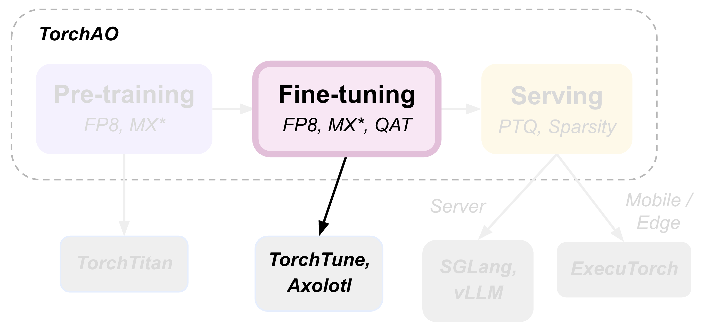
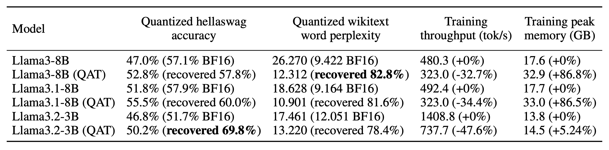

(Part 2) Fine-tuning with QAT, QLoRA, and float8¶
TorchAO provides an end-to-end pre-training, fine-tuning, and serving model optimization flow by leveraging our quantization and sparsity techniques integrated into our partner frameworks. This is part 2 of 3 such tutorials showcasing this end-to-end flow, focusing on the fine-tuning step.
Fine-tuning is an important step for adapting your pre-trained model to more domain-specific data. In this tutorial, we demonstrate 3 model optimization techniques that can be applied to your model during fine-tuning:
1. Quantization-Aware Training (QAT), for adapting your model to quantization numerics during fine-tuning, with the goal of mitigating quantization degradations in your fine-tuned model when it is quantized eventually, e.g. in the serving step. Check out our blog and README for more details!
2. Quantized Low-Rank Adaptation (QLoRA), for reducing the resource requirement of fine-tuning by introducing small, trainable low-rank matrices and freezing the original pre-trained checkpoint, a type of Parameter-Efficient Fine-Tuning (PEFT). Please refer to the original paper for more details.
3. Float8 Quantized Fine-tuning, for speeding up fine-tuning by dynamically quantizing high precision weights and activations to float8, similar to pre-training in float8.
Quantization-Aware Training (QAT)¶
The goal of Quantization-Aware Training is to adapt the model to quantization numerics during training or fine-tuning, so as to mitigate the inevitable quantization degradation when the model is actually quantized eventually, presumably during the serving step after fine-tuning. TorchAO’s QAT support has been used successfully for the recent release of the Llama-3.2 quantized 1B/3B and the LlamaGuard-3-8B models to improve the quality of the quantized models.
TorchAO’s QAT support involves two separate steps: prepare and convert. The prepare step “fake” quantizes activations and/or weights during training, which means, the high precision values (e.g. bf16) are mapped to their corresponding quantized values without actually casting them to the target lower precision dtype (e.g. int4). The convert step, applied after training, replaces “fake” quantization operations in the model with “real” quantization that does perform the dtype casting:

There are multiple options for using TorchAO’s QAT for fine-tuning:
Use our integration with TorchTune
Use our integration with Axolotl
Directly use our QAT APIs with your own training loop
Option 1: TorchTune QAT Integration¶
TorchAO’s QAT support is integrated into TorchTune’s distributed fine-tuning recipe. Instead of the following command, which applies full distributed fine-tuning without QAT:
# Regular fine-tuning without QAT
tune run --nnodes 1 --nproc_per_node 4 full_finetune_distributed --config llama3_2/3B_full batch_size=16
Users can run the following equivalent command instead. Note that specifying the quantizer is optional:
# Fine-tuning with QAT, by default:
# activations are fake quantized to asymmetric per token int8
# weights are fake quantized to symmetric per group int4
# configurable through "quantizer._component_" in the command
tune run --nnodes 1 --nproc_per_node 4 qat_distributed --config llama3_2/3B_qat_full batch_size=16
After fine-tuning, users can quantize and evaluate the resulting model as follows. This is the same whether or not QAT was used during the fine-tuning process:
# Quantize model weights to int4
tune run quantize --config quantization \
model._component_=torchtune.models.llama3_2.llama3_2_3b \
checkpointer._component_=torchtune.training.FullModelHFCheckpointer \
'checkpointer.checkpoint_files=[model-00001-of-00002.safetensors,model-00002-of-00002.safetensors]' \
checkpointer.model_type=LLAMA3 \
quantizer._component_=torchtune.training.quantization.Int8DynActInt4WeightQuantizer \
quantizer.groupsize=32
# Evaluate the int4 model on hellaswag and wikitext
tune run eleuther_eval --config eleuther_evaluation \
batch_size=1 \
'tasks=[hellaswag, wikitext]' \
model._component_=torchtune.models.llama3_2.llama3_2_3b \
checkpointer._component_=torchtune.training.FullModelTorchTuneCheckpointer \
'checkpointer.checkpoint_files=[model-00001-of-00002-8da4w.ckpt]' \
checkpointer.model_type=LLAMA3 \
tokenizer._component_=torchtune.models.llama3.llama3_tokenizer \
tokenizer.path=/tmp/Meta-Llama-3-8B-Instruct/original/tokenizer.model \
quantizer._component_=torchtune.training.quantization.Int8DynActInt4WeightQuantizer \
quantizer.groupsize=32
This should print the following after fine-tuning:
| Tasks |Version|Filter|n-shot| Metric | |Value | |Stderr|
|---------|------:|------|------|--------|---|-----:|---|-----:|
|hellaswag| 1|none |None |acc |↑ |0.5021|± |0.0050|
| | |none |None |acc_norm|↑ |0.6797|± |0.0047|
| Tasks |Version|Filter|n-shot| Metric | | Value | |Stderr|
|--------|------:|------|------|---------------|---|------:|---|------|
|wikitext| 2|none |None |bits_per_byte |↓ | 0.6965|± | N/A|
| | |none |None |byte_perplexity|↓ | 1.6206|± | N/A|
| | |none |None |word_perplexity|↓ |13.2199|± | N/A|
You can compare these values with and without QAT to see how much QAT helped mitigate quantization degradation! For example, when fine-tuning Llama-3.2-3B on the OpenAssistant Conversations (OASST1) dataset, we find that the quantized model achieved 3.4% higher accuracy with QAT than without, recovering 69.8% of the overall accuracy degradation from quantization:
In addition to vanilla QAT as in the above example, TorchAO’s QAT can also be composed with LoRA to yield a 1.89x training speedup and lower memory usage by 36.1%. This is implemented in TorchTune’s QAT + LoRA fine-tuning recipe, which can be run using the following command:
# Fine-tuning with QAT + LoRA
tune run --nnodes 1 --nproc_per_node 4 qat_lora_finetune_distributed --config llama3_2/3B_qat_lora batch_size=16
For more details about how QAT is set up in TorchTune, please refer to this tutorial.
Option 2: Axolotl QAT Integration¶
Axolotl also recently added a QAT fine-tuning recipe that leverages TorchAO’s QAT support. To get started, try fine-tuning Llama-3.2-3B with QAT using the following command:
axolotl train examples/llama-3/3b-qat-fsdp2.yaml
# once training is complete, perform the quantization step
axolotl quantize examples/llama-3/3b-qat-fsdp2.yaml
# you should now have a quantized model saved in ./outputs/qat_out/quatized
Please refer to the Axolotl QAT documentation for full details.
Option 3: TorchAO QAT API¶
If you prefer to use a different training framework or your own custom training loop, you can call TorchAO’s QAT APIs directly to transform the model before fine-tuning. These APIs are what the TorchTune and Axolotl QAT integrations call under the hood.
In this example, we will fine-tune a mini version of Llama3 on a single GPU:
import torch
from torchtune.models.llama3 import llama3
# Set up a smaller version of llama3 to fit in a single A100 GPU
# For smaller GPUs, adjust the model attributes accordingly
def get_model():
return llama3(
vocab_size=4096,
num_layers=16,
num_heads=16,
num_kv_heads=4,
embed_dim=2048,
max_seq_len=2048,
).cuda()
# Example training loop
def train_loop(m: torch.nn.Module):
optimizer = torch.optim.SGD(m.parameters(), lr=0.001, momentum=0.9, weight_decay=1e-5)
loss_fn = torch.nn.CrossEntropyLoss()
for i in range(10):
example = torch.randint(0, 4096, (2, 16)).cuda()
target = torch.randn((2, 16, 4096)).cuda()
output = m(example)
loss = loss_fn(output, target)
loss.backward()
optimizer.step()
optimizer.zero_grad()
Next, run the prepare step, which fake quantizes the model. In this example, we use int8 per token dynamic activations and int4 symmetric per group weights as our quantization scheme. Note that although we are targeting lower integer precisions, training still performs arithmetic in higher float precision (float32) because we are not actually casting the fake quantized values.
from torchao.quantization import quantize_, Int8DynamicActivationInt4WeightConfig
from torchao.quantization.qat import QATConfig
model = get_model()
# prepare: swap `torch.nn.Linear` -> `FakeQuantizedLinear`
base_config = Int8DynamicActivationInt4WeightConfig(group_size=32)
quantize_(model, QATConfig(base_config, step="prepare"))
# fine-tune
train_loop(model)
After fine-tuning, we end up with a model in the original high precision. This fine-tuned model has the exact same structure as the original model. The only difference is the QAT fine-tuned model has weights that are more attuned to quantization, which will be beneficial later during inference. The next step is to actually quantize the model:
from torchao.quantization import Int8DynamicActivationInt4WeightConfig
# convert: swap `FakeQuantizedLinear` -> `torch.nn.Linear`, then quantize using `base_config`
quantize_(model, QATConfig(base_config, step="convert"))
# inference or generate
Now our model is ready for serving, and will typically have higher quantized accuracy than if we did not apply the prepare step (fake quantization) during fine-tuning.
For full details of using TorchAO’s QAT API, please refer to the QAT README.
Alternative Legacy API
The above quantize_ API is the recommended flow for using TorchAO QAT. We also offer an alternative legacy “quantizer” API for specific quantization schemes, but these are not customizable unlike the above example.
from torchao.quantization.qat import Int8DynActInt4WeightQATQuantizer
qat_quantizer = Int8DynActInt4WeightQATQuantizer(group_size=32)
# prepare: insert fake quantization ops
# swaps `torch.nn.Linear` with `Int8DynActInt4WeightQATLinear`
model = qat_quantizer.prepare(model)
# train
train_loop(model)
# convert: transform fake quantization ops into actual quantized ops
# swaps `Int8DynActInt4WeightQATLinear` with `Int8DynActInt4WeightLinear`
model = qat_quantizer.convert(model)
Quantized Low-Rank Adaptation (QLoRA)¶
Low-Rank Adaptation (LoRA) refers to freezing the original model, and instead training a set of new “adapter” parameters that are a small fraction of the original parameters, thereby significantly reducing the memory footprint during training. QLoRA is an extension of LoRA that additionally quantizes the frozen original model parameters to 4-bits, thereby further reducing the memory footprint.
TorchAO offers an implementation of the NF4 data type proposed in the original QLoRA paper. This implementation expresses NF4 as a tensor subclass through the NF4Tensor, which composes cleanly with other PyTorch features like torch.compile and FSDP2. Users can convert a high precision tensor to NF4 simply by calling torchao.dtypes.to_nf4. For example:
class FrozenNF4Linear(nn.Linear):
def __init__(
self,
in_dim: int,
out_dim: int,
bias: bool = False,
device: Optional[torch.device] = None,
dtype: Optional[torch.dtype] = None,
**quantization_kwargs,
):
super().__init__(in_dim, out_dim, bias=bias, device=device, dtype=dtype)
# No need to train these in QLoRA
self.weight.requires_grad_(False)
if self.bias is not None:
self.bias.requires_grad_(False)
nf4_weight = to_nf4(self.weight, **quantization_kwargs)
self.weight = torch.nn.Parameter(nf4_weight, requires_grad=False)
QLoRA need not work with NF4 specifically, though NF4 has been shown to achieve competitive results compared to bf16 baselines while significantly reducing the memory required for training. This technique can also compose with other lower bit dtypes such as regular INT4 or even newer MXFP4 or NVFP4 targeting Blackwell GPUs to reap similar memory benefits with varying tradeoffs.
Option 1: TorchTune Integration¶
TorchTune incorporates the NF4Tensor in its QLoRA fine-tuning recipe through their implementation of LoRALinear. You can also try it out by running the following command, or refer to their QLoRA tutorial for more details.
tune run lora_finetune_single_device --config llama3_2/3B_qlora_single_device.yaml
Option 2: HuggingFace PEFT Integration¶
HuggingFace PEFT also has a limited version of QLoRA leveraging TorchAO’s INT8 quantization, though INT4 or NF4 are not supported yet. Users can invoke this functionality by preparing their models as follows. For full details, please refer to this tutorial.
from peft import LoraConfig, get_peft_model
from transformers import AutoModelForCausalLM, TorchAoConfig
from torchao.quantization import Int8WeightOnlyConfig
base_model = AutoModelForCausalLM.from_pretrained(
"meta-llama/Llama-3.2-1B",
quantization_config=TorchAoConfig(Int8WeightOnlyConfig()),
)
peft_config = LoraConfig()
model = get_peft_model(base_model, peft_config)
Float8 Quantized Fine-tuning¶
Similar to pre-training, we can also leverage float8 in fine-tuning for higher training throughput with no accuracy degradation and no increase in memory usage. Float8 training is integrated into TorchTune’s distributed full fine-tuning recipe, leveraging the same APIs as our integration with TorchTitan. Users can invoke this fine-tuning recipe as follows:
tune run --nnodes 1 --nproc_per_node 4 full_finetune_distributed --config llama3_2/3B_full
enable_fp8_training=true \
fp8_recipe_name=tensorwise \
compile=True
Initial experiments saw up to 16.5% throughput improvement for fine-tuning Llama3.2-3B in float8:
experiment_name tok/s peak_mem_reserved
---------------------- ------------------- -------------------
bf16 6502.143 (+0.000%) 30.090 (+0.000%)
fp8_noname 7205.386 (+10.816%) 30.010 (-0.266%)
fp8_tensorwise 7222.198 (+11.074%) 30.010 (-0.266%)
fp8_rowwise 6387.968 (-1.756%) 29.158 (-3.096%)
fp8_rowwise_with_gw_hp 7573.698 (+16.480%) 29.516 (-1.908%)
experiment_name hellaswag_acc wikitext_word_perplexity
---------------------- --------------- --------------------------
bf16 0.533 (+0.000) 12.407 (+0.000)
fp8_noname 0.533 (+0.000) 12.414 (+0.007)
fp8_tensorwise 0.533 (+0.000) 12.412 (+0.005)
fp8_rowwise 0.533 (-0.000) 12.420 (+0.013)
fp8_rowwise_with_gw_hp 0.534 (+0.001) 12.416 (+0.009)
Please refer to the pre-training tutorial for more details.